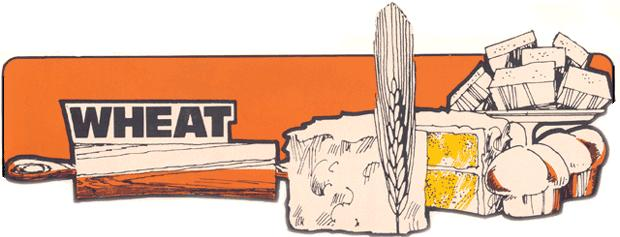

Cooking With Grains
July/August 1974
Wheat has been called the staff of life. Since before recorded history, whole civilizations have depended upon wheat crops as their major source of food, and some variety of this grain can be grown on almost any arable land. Wheat contains most essential vitamins and minerals, but is especially rich in vitamins B-complex and E. Stone-ground whole wheat flour retains many more nutrients than either the white variety or the whole wheat product of modern, commercial milling methods. The high gluten content of wheat flour makes it better suited to baking than flours made from other grains.
WHOLE WHEAT BREAD
Wheat for Man . . . Why and How suggests the following method for making three 2-pound (or four 1-1/2 pound) loaves of whole wheat bread. Dissolve 2 packages of dry yeast in 1 cup of warm water. In a large mixing bowl, combine the softened yeast with 1/2 cup oil or melted shortening, 1/2 cup sugar, honey or molasses, 2 tablespoons of salt and 5 cups of milk (water or potato water may be substituted)- Gradually add 11 to 12 cups unsifted whole wheat flour and mix well (the resulting dough should be quite moist). Let the batter rest 10-15 minutes before kneading it for 10 minutes on a floured (preferably canvas-covered) board. The dough should then be refrigerated (covered with foil or a dampened towel) for 3 to 24 hours and may need to be "punched down" once or twice. (If dough is to be refrigerated only 3 hours, the liquid used should be heated to lukewarm. Also, the kneading may be done after refrigeration if more convenient.) Take the dough from the refrigerator and let stand at room temperature (or in 80-85° F oven) 30-60 minutes. Knead 10 minutes if not done previously. Mold into three or four loaves and place in loaf pans. Lightly grease the top of each loaf and let rise until almost doubled. Bake at 325° F for 1 hour 10 minutes to 1 hour 20 minutes.
WHOLE WHEAT MUFFINS
Taken from The New York Times Natural Foods Cookbook. Sift together into a mixing bowl 3 cups whole wheat flour, 1/3 cup brown sugar (or raw sugar), 1 teaspoon salt and 4-1/2 teaspoons baking powder. In another bowl, combine 2 beaten eggs, 1/3 cup melted butter and 1-1/3 cups milk. Stir egg mixture into the dry ingredients. Pour into oiled muffin tins, filling to 2/3 full, and bake at 375° F for 20 minutes or until done. Makes 18 medium muffins.
Barley is believed to be among the most ancient of foods used by the human race and one of the first cultivated cereals. It grows best in loose, fertile soil in cool, moist climates. Generally grown to produce grain (which can be made into malt), it is also used for hay and pasture. The grain, or barleycorn, contains 8-19% protein and most (if not all) of the vitamins and minerals essential to human nutrition. Barley flour is used in combination with other flours for baking, and the grain-either whole or pearled-is added to soups to thicken them. Pearl barley is usually available at supermarkets and other forms of the grain can be found in health food stores.
BARLEY BREAD
The Oats, Peas, Beans & Barley Cookbook gives the following recipe using barley flour. Measure into a small bowl 2 tablespoons of yeast and 1 tablespoon of brown sugar. Heat 2 cups of water to lukewarm (100° F) and stir enough of the liquid into the yeast and sugar mixture to dissolve them. Measure out 4-1/2 cups barley flour and put half into a large bowl with the remaining water. Beat the dough vigorously to incorporate air and develop gluten, and then stir in 2 teaspoons salt, 1 tablespoon oil and the softened yeast and sugar. Add 1/4 cup soy flour and enough barley flour to thicken the dough until it can be kneaded. Knead until smooth and elastic, shape into two round loaves and place on cookie sheet. Cut slashes across the top and let rise until doubled in size. Bake for 1 hour at 350° F.
BARLEY SOUP
From The New York Times Natural Foods Cookbook.
6 cups beef broth or vegetable broth (vegetable cooking water)
1/4 cup whole barley, washed
1/4 cup chopped onions
2 cups tomatoes, peeled and chopped
1 cup fresh peas
1/2 cup diced celery
1 cup carrots, sliced
1/2 cup chopped parsley
salt to taste
Combine broth and barley in a heavy kettle, cover and simmer. When barley is tender (about one hour) add remaining ingredients except parsley. Cook just until vegetables are done, add parsley and serve. Yields enough for six.
Rye is a grass crop which will grow in almost any soil. It is widely planted to protect and improve the land, for use as pasture and for its grain . . . which is a staple food in northern Europe. Second only to wheat in nutritional value, rye has a fair gluten content. Ground into flour, it makes a delicious (if somewhat heavy) bread and is often used in combination with other flours for a lighter result. Rye is also available whole, flaked or ground into grits (for use as a cereal) and can be found in most health food stores.
SWEDISH RYE BREAD
From the New Age Vegetarian Cookbook.
Soften:
1 cake yeast in 1/4 cup lukewarm water
Add:
1/2 tablespoon brown sugar
Boil and let cool:
1 cup milk
1 cup water
Add to milk and water and beat well: 3 cups unbleached flour
Let rise until double in bulk.
Mix in saucepan and boil for 1 minute:
1/4 cup unsulfured molasses
1/2 cup dark corn syrup
1 teaspoon fennel seed
Strain, cool and add: 1/2 cup shortening
When cooled to lukewarm, add to dough mixture along with:
4 cups rye flour, sifted with
1/2 tablespoon salt, and add
grated rind of 2 oranges
Let rise until doubled in bulk, knead and shape into long, thin loaves. Put into greased pans and let rise until doubled. Bake at 400° F for 15 minutes, lower heat to 350° F and continue baking for another 45-60 minutes.
RYE BERRY CASSEROLE
From The Deaf Smith Country Cookbook. You will need 2 cups rye berries (whole kernels), 2 medium onions, a small purple cabbage (about 1 pound), water, salt and sesame oil. Rinse and drain the rye berries and place in a pressure cooker with 3 cups water and 1/2 teaspoon salt. Bring to full pressure, lower heat and cook 45 minutes. Allow to cool until pressure is reduced to zero, uncover and stir. Put 1 tablespoon of oil into heated skillet, add chopped onions and sauté until tender. Cut cabbage into 1" pieces, add to skillet and sauté 5 minutes. Cover and simmer until done, adding water if necessary to prevent scorching. Mix vegetables with rye berries, add salt to taste and place in oiled 2-quart casserole. Bake at 350° F for 15 minutes. Serves six.
Oats occur in many forms in the wild state and several cultivated varieties have been developed. They were probably brought to America by the Scots. Among the grains, oats now rank third in economic importance (after wheat and corn) and the United States is the major producer, followed by Canada and the Soviet Union. A good source of protein and B vitamins, oats are an important livestock feed. For human consumption, the husks are removed and the grain is rolled into thin, flaky sections or ground into oatmeal. The whole grain minus husks is known as groats. Steelcut oats have been reduced to smaller particles and grits are finer yet.
OATMEAL COOKIES
From the Whole Earth Cookbook. Beat together until creamy:
2 eggs
3/4 cup shortening
2/3 cup honey
2 teaspoons vanilla
Add:
1 cup whole wheat flour
3 cups oatmeal
2 teaspoons baling powder
1/2 teaspoon salt
Mix well. Add and stir in:
1/2 cup chopped nuts
1/2 cup shredded, unsweetened coconut
Drop by rounded teaspoons on greased cookie sheet and bake for 10 minutes at 325° F.
THE BEST BREAD RECIPE IN THE WORLD by Susan Sikse
For two loaves:
Pour two cups boiling water over one cup dry rolled oats; let this stand for about half an tour (until the oats have thoroughly softened). Then: soak two packages of yeast in 1/3 cup lukewarm water. Add one table spoon salt, 1/2 cup honey, and two tablespoons melted butter to the oats, then add the yeast. Gradually add enough flour so that the dough is kneadable (between four and five cups . . . flour does not have to be sifted). Knead five to ten minutes, or until the dough is elastic and smooth, and add flour as necessary. If you knead the dough in the bowl you mixed it up in, the kitchen won't get quite so floury, and you can oil the surface of the dough and leave in the same bowl (covered with a towel and in a warm place) to let it rise. When the dough has doubled in bulk, punch it down, divide in two, shape into two loaves, and put each in an 8" X 4" bread pan. Turn the oven on to 325° F . . . it will be warm by the time the loaves are nearly doubled in bulk. Mix a few drops of water into an egg yolk and use this mixture to coat the tops of the loaves. Sprinkle lots of poppy seed on the loaves and bake for about 50 minutes.
Corn, native to the Americas, is a staple food of Mexico and some of the South American countries. There are several varieties including dent corn (harvested when dry, used for livestock feed and ground into meal, flour, grits, etc.), sweet corn (picked and eaten when the kernels are mature but tender) and popcorn. Many strains have been developed for cultivation in different localities and hybridizing of these specialized strains has resulted in increased yields (but less per-bushel nutritional value). Corn is high in trace minerals and B vitamins, and yellow corn has a greater vitamin A content than the white varieties. This is the most practical of the grains for growing and harvesting on a small scale.
The next two recipes come from the New Age Vegetarian Cookbook.
PLAIN ROASTED CORN
Put fresh corn on the cob (still in the husks) in 350° F oven and roast until tender or about 1/2 hour. Remove the husks and silks and serve piping hot with melted butter and seasonings.
SOUTHERN SPOONBREAD
Mix 2 cups of yellow cornmeal (sifted 3 times) into 2 cups boiling water and stir until smooth. Add 3 tablespoons of melted butter and 1 teaspoon of salt. Stir in 1-1/2 cups milk. Separate 3 eggs and beat the yolks until light and the whites until stiff. Add yolks to the cornmeal mixture and stir, then fold in beaten whites. Pour into a buttered dish and bake for about 30 minutes at 350° F. Serve hot in the same dish. Eight servings.
CORN BREAD
The following corn bread recipe is from The Deaf Smith Country Cookbook. Mix together 3 cups stoneground cornmeal, I teaspoon salt and 3 tablespoons of corn oil. Pour 2 cups boiling water into the mixture well . Add ore cup milk and let cool for about 40 minutes. Stir in 1 beaten egg and 3 teaspoons baking powder. Pour the batter into a hot, well-oiled 8" X 8" pan or muffin tins. Bake at 425° F for 30-40 minutes and serve hot.
Rice has been cultivated for centuries and probably originated in southeastern Asia. It is now grown extensively in China and India (where it serves as a major portion of the human diet) and is also produced commercially in Australia and the Americas. (Wild rice is native to North America.) The cultivation of rice requires long periods of sunshine and a heavy soil that will hold water, and is usually done in "paddies" which are flooded throughout the growing season.
The outer layer of this grain contains most of the important nutrients. Therefore, natural brown rice is far more nutritious than white (which has had the bran or polish removed) . . . and wild rice is considered twice again as vitamin-packed as the domesticated variety. "Converted" rice is said to have had the vitamins forced into the white, starchy part of the kernel before milling, thereby saving them from being lost in the chaff.
The New York Times Natural Foods Cookbook recommends the following recipes using brown rice.
RICE PUDDING
Place in a buttered 1-1/2-quart baking dish:
2 cups brown rice, cooked
1/2 cup raisins
1/2 teaspoon grated lemon rind
1 teaspoon lemon juice
Beat together and pour over rice mixture:
1/2 cup honey
1/2 teaspoon vanilla flavoring
3 eggs 2-1/2 cups milk
1/4 teaspoon salt
Stir mix and bake at 325° F for 30 minutes or until set. Serves four.
BOILED BROWN RICE
Place 1 cup brown rice (rinsed and drained), 2 to 3 cups water and salt to taste in a saucepan. Bring to boil, lower heat, cover tightly and simmer slowly until the rice is tender and the water has been absorbed (about 45 minutes). Do not stir during cooking. (Using the greater amount of water results in softer rice.) Yields about 4 cups.
BREAKFAST RICE
Put 1 cup brown rice in electric blender and grind until kernels are reduced to 1/2 their original size. Combine with 1 cup raisins and 4 cups milk in a saucepan. Bring the mixture to a boil, cover tightly and simmer over low heat 10-15 minutes or until tender. Serve with maple syrup. Makes four servings.
The books from which these recipes are taken are available from MOTHER'S
Bookshelf, P.O. Box 70, Hendersonville, N.C. 28739.
|
a wall mini-guide to the six most common cereals |
 wheat | barley | corn | rye | oats | rice |
|
|
|
|
|
 |
|
|